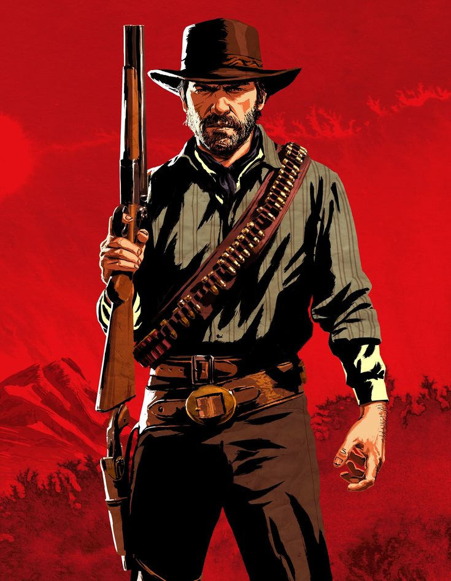

An era where the law can't reach you and the horizon is yours for the taking is about to end. The Red Dead Redemption series plunges you into the dying heart of the Wild West, putting you in the boots of legendary outlaws fighting for survival, loyalty, and their last shred of freedom. Experience the colossal, emotionally gripping prequel, RDR2, where every sunset and every choice shapes the tragic journey of Arthur Morgan, then follow the desperate, gunslinging quest of John Marston in RDR to secure a future he may not deserve. These are not just games; they are immersive, cinematic masterpieces that redefine what an open-world epic can be.
Ready to ride into the West?

John Marston: The Scarred Redeemer
Meet John Marston, a scarred former outlaw forced by the government to hunt down the former gang he abandoned for a quiet life. His family has been taken, and the only path to freedom is trading the blood-soaked ghosts of his past for the fragile promise of his future. He is a violent man desperately fighting to earn a peaceful end in a world rapidly closing the chapter on the Wild West.

Arthur Morgan: The Loyalist's Last Ride
Meet Arthur Morgan, the grim enforcer of the infamous Van der Linde gang, a family of outlaws led by the charismatic, delusional Dutch. Arthur is a killer with a poet's soul, facing the bitter end of the Wild West while questioning the very man who raised him. As the law closes in and his own life begins to fade, Arthur's final journey becomes a desperate race to decide if his loyalty can justify his sins, or if he must choose redemption for others.